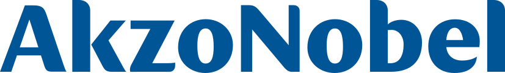

Ranglister Byggeri & materialer Akzo Nobel

Akzo Nobel
Et blik på de samme fund, ikke en ny score. Sådan virker det
Kort fortalt
Scoren er 70 af 100: aktien er lavt prissat i forhold til sin historik, men væksten er svag, og indtjeningen ligger under konkurrenternes. Ned trækker, at omsætningen er skrumpet, at afkastet er under kapitalomkostningen, og at sammenlægningen med Axalta sker uden præmie, efter at bestyrelsen afviste et kontantbud. Op trækker fem kvartaler med bedre overskudsgrad. Hold øje med et særudbytte på op til 2,5 mia. euro.
En stærk score: modellen fandt få alvorlige problemer, men analytikerne ser begrænset opside herfra.
Største fradrag
- ROIC−4
- Governance (afvist kontantbud)−4
- Vækstens kvalitet−3
Styrker
- Margin-turnaround+2
Sådan er scoren bygget op
Fra 100 til 70, trin for trin: point trækkes fra for forretningen, prisen og revnerne, lægges til for dokumenterede styrker, og så følger tre datajusteringer.
Hold musen over et trin eller vælg det for at se, hvad der drev det. Trin med fund åbner dem nedenfor.
Nøgletal
Pr. 6 nov. 2026. Analytikernes kursmål er ofte optimistiske; læs opsiden som et fingerpeg, ikke en prognose.
- Pris
- 62.90 EUR
- Analytikernes mediankursmål
- 65.00 EUR
- Opside til median
- +3.3%
- Analytikere
- 16
- Kursmålsinterval
- 55.00 – 75.00 EUR
- 52-ugers ændring
- +11%
- P/E (historisk)
- 16.8
- Forward P/E
- 15.2
- PEG
- 1.71
Fund
Hvert fradrag og hvert plus med sin kilde. Åbn et trin for at læse dem.
Forretning
Bliver virksomheden stærkere, ikke bare større? · 4 fund−10 af −30
- −3Vækstens kvalitetOmsætningen er skrumpet fra 10,85 mia. EUR (2022) til 9,89 mia. TTM (−6 % på et år). Organisk vækst i Q2 var kun +2 % og båret af pris; mængderne var flade, og i Deco faldt mængderne 4 %.
- −4ROICROIC 6,4 % mod en WACC på 7,3 % og 11,3 % i 2021; afkastet har ligget under kapitalomkostningen i fire af de seneste fem år.
- −2Margin mod peersJusteret EBITDA-margin 14,9 % i H1 og driftsmargin ca. 8 % TTM – klart under Sherwin-Williams og under Axaltas ca. 21 %; selskabets eget mellemfristede mål er blot 'over 16 %'.
- −1KapitalallokeringUdbyttet har stået stille på 1,98 EUR i fem år, ingen tilbagekøb siden 2022, og EPS er 3,71 EUR TTM mod 4,46 i 2021, selv med gevinsten fra India-salget.
Pris
Dagens multipler målt mod selskabets egen historik og konkurrenterne. · 2 fund−3 af −35
- −1Multipler mod egen historikForward P/E 13,9 mod 12,3–19,7 i 2021–25, EV/EBITDA 10,9 mod 11,7–15,3 og trailing P/E 15,3 mod 16,0–31,5 – i bunden af historikken, men historikken dækker en periode med faldende omsætning og ROIC.
- −2Peers og absolut niveauEV/EBIT 15,8 og EV/FCF 22,1 med 3,1 mia. EUR nettogæld; forward P/E 13,9 er på niveau med PPG og Axalta, der har højere marginer. FCF-afkast ca. 6 % – ingen reel rabat til svagere forretning.
Revner
Cash flow, kunder, gæld, insidere, guidance og det, der ligger bag hovedtallene. · 4 fund−10 af −35
- −4Governance (afvist kontantbud)Bestyrelsen afviste i juni at forhandle om Nippon Paint og Sherwin-Williams' kontantforslag på 73 EUR pr. aktie (ca. 28 % over nuværende kurs) for at beskytte fusionen uden præmie med Axalta; aktien faldt 19 % til 53,74 EUR, da konsortiet trak sig.
- −3Fusion og integration (Axalta)Fusion af ligeværdige uden præmie: Akzo-aktionærer får 55 %, Axaltas formand bliver formand, og det samlede selskab flytter til ren NYSE-notering efter en overgangsperiode (risiko for tvangssalg fra europæiske indeksfonde). Synergimålet på ca. 600 mio. USD skal realiseres over tre år, og EU's afgørelse afventes (frist 22/10).
- −2GældNettogæld 3,1 mia. EUR (2,9 x EBITDA), bruttogæld/EBITDA 5,6 og rentedækning 3,5; bruttogælden steg 1,7 mia. i H1 forud for særudbyttet på op til 2,5 mia. EUR, som øger nettogælden yderligere ved udbetaling.
- −1PengestrømDriftspengestrømmen i H1 2026 var kun 84 mio. EUR mod 122 mio. året før, og konsensus venter FCF på blot ca. 360 mio. EUR i 2026 mod 606 mio. i 2025.
Plus
Kun dokumenterede styrker. · 1 fund+2 af +15
- +2Margin-turnaroundFemte kvartal i træk med højere justeret EBITDA-margin (15,4 % i Q2 mod 15,0 %), sammenligneligt EBITDA +5 %, og helårsguidance på mindst 1,47 mia. EUR er bekræftet.
Forbehold
Det, scoren ikke fanger, eller hvor dataene er svage.
Også i Byggeri & materialer
De højeste scorer i samme branche.